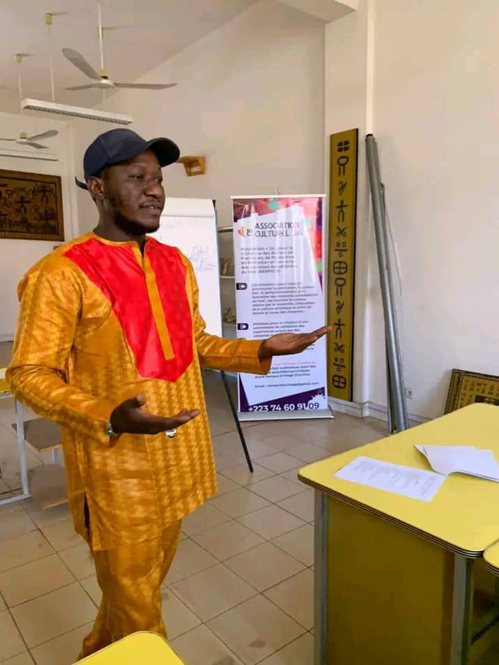

Générique
Association Culturelle JA — JA IMAGE — est une association basée à Bamako, fondée en 2020, née de la conviction que le cinéma se transmet aussi hors des écoles.

Fondation & mission
Créée en 2020, Association Culturelle JA œuvre pour la promotion du cinéma, de la culture et de la jeunesse au Mali. Elle soutient la formation et la professionnalisation des cinéastes autodidactes à travers des programmes de formation, de production et de diffusion.
Ce qui nous rassemble : la conviction qu'un regard curieux et une caméra suffisent pour commencer — dans la lignée d'un pays où l'on raconte des histoires depuis bien avant l'invention de la caméra.
Le Mali a donné au cinéma africain des cinéastes majeurs, comme Souleymane Cissé — et un rendez-vous continental, le FESPACO à Ouagadougou, qui continue d'inspirer notre travail au quotidien.
« Former, créer, inspirer »
Cultivons les talents, partageons les histoires
Nos objectifs
Offrir des formations de qualité couvrant tous les aspects de la réalisation cinématographique.
Organiser un festival annuel dédié aux cinéastes autodidactes — le Festival Cinéastes Autodidactes.
Fournir un appui technique, logistique et financier à la production de films indépendants.
Sur le terrain
Organisées dans plusieurs régions du Mali, pas seulement à Bamako.
Deux outils en préparation pour les cinéastes et les productions au Mali.
Accompagnement de films indépendants portés par des autodidactes.
Projections publiques et événements ouverts à tous, à Bamako.
Ce qui nous guide
Le cinéma et son apprentissage doivent rester ouverts à tous, quels que soient les moyens de départ.
Chaque parcours d'autodidacte est différent — nous nous adaptons plutôt que d'imposer un moule.
Ceux qui savent partagent avec ceux qui apprennent, dans les deux sens.
Le cinéma africain se regarde et se soutient au-delà des frontières.
Sur le terrain
Une équipe de formateurs, bénévoles et mentors, en action lors de nos ateliers et séances Ciné Court School.

Encadrement des ateliers

Accompagnement technique
Pilotage des programmes

Suivi des autodidactes